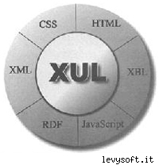
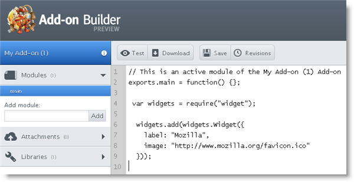
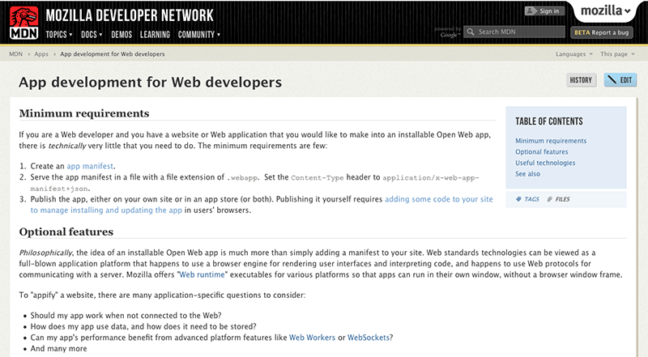

Add-ons para Firefox
Clauber Stipkovic
Lindo, filho maravilhoso. Um amor!!!
#facepalm

Clauber Stipkovic
- Front-End Developer - UOL HOSTS
-
Voluntário Mozilla (desde 2005) e Mozilla Reps
Tradução, Mozilla Ubiquity, Addons SDK, Firefox OS (Gaia) ... - Estudante de Ciência da Computação na Universidade Mackenzie - FCI

Antes de começar, um pouco de história!
Como os Extensões eram feitas antes?
Zuul ou XUL?
XUL - XML User Interface Language
Mozilla's XML-based language

https://developer.mozilla.org/en/docs/XUL
Alguns problemas ao utilizar XUL!
- Hierarquia e quantidade de arquivos muito grande para construir uma extensão
- Necessidade de reiniciar o navegador ápos instalar a extensão
- Acesso direto ao Core do Firefox podendo causar problemas de segurança
Mozilla Ubiquity
Onde as idéias começaram a surgir!
Mozilla Jetpack - o Add-on Protótipo
Vantagens para os Web Developers
- Web-Based: Atrativo para o desenvolvedor
- Mais seguro
- Robusto - API
- Sem necessidade de restart do navegador / Atualização "Silenciosa"
- Padrões abertos e utilização de Javascript (seguindo as recomendações do CommonJS)
Mozilla Add-ons SDK
E o que o Add-on SDK trouxe para os desenvolvedores?
- Um SDK mais robusto, e não apenas um Add-on para fazer Add-ons
- Utilização de linguagens e tecnologias como Python, Virtualenv, Javascript
- Possibilidade de utilizar o SDK em linha de comando
- Gerador de XPI, execução de testes, tudo isso em linha de comando
Ok, mas linha de comando é um pouco dificil pra mim!
Sem problemas :)
Mozilla Add-on Build

https://builder.addons.mozilla.org/
Mozilla Add-on Build
- Criação de Add-ons direto pelo browser
- Produtivo editor de texto online
- Teste instantaneo do seu Add-on
- Possibilidade de utilização de controle de versão integrado & compartilhamento
MDN - Mozilla Developer Network

Links que podem "te ajudar a conseguir ajuda" :)
Obrigado
-
clauber.coffeebreakers.org
twitter: @clauberhalic
http://tinyurl.com/mozilla-tech-day-bandtec-2013